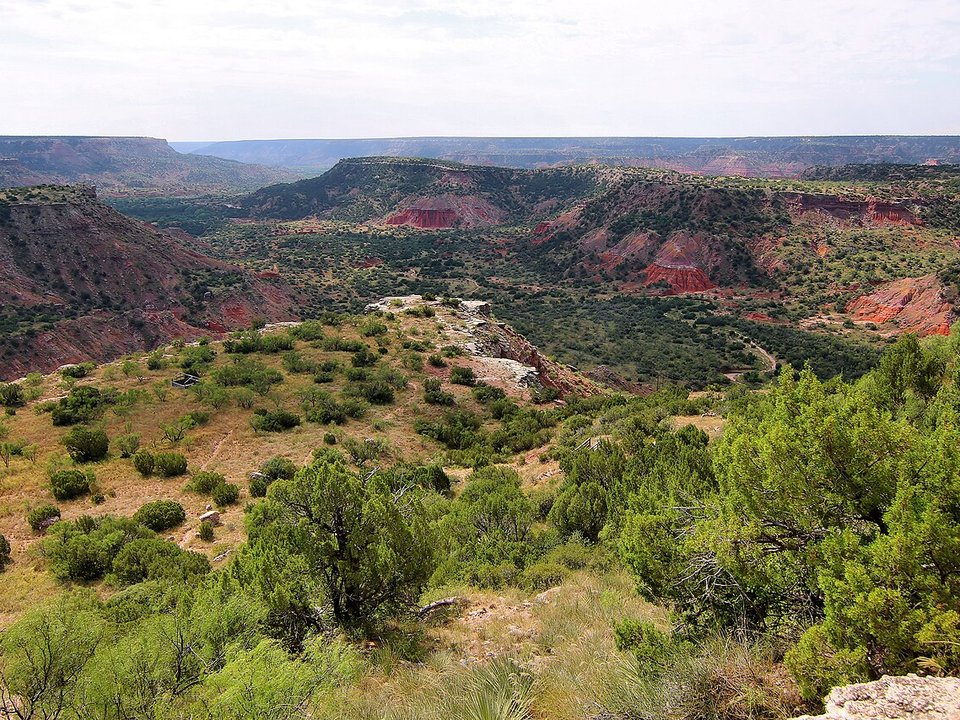

Downtown · Boutique hotel
The Barfield, Autograph Collection
A 1926 downtown tower turned luxury boutique hotel.
Official details for The Barfield, Autograph CollectionA canyon hidden in the plains.
Palo Duro Canyon is a surprise: the flat Texas Panhandle suddenly drops 800 feet into a canyon of red and orange rock some 120 miles long, the second-largest in the country. Land at Amarillo, drive 30 minutes to the canyon to hike to the Lighthouse rock or ride horseback, watch the TEXAS outdoor musical in the canyon’s amphitheater on a summer night, and back in town see the cars buried nose-down at Cadillac Ranch and the Panhandle-Plains Historical Museum.

Time illustration: direct distance at 150 KTAS plus 15 minutes for departure and arrival, matching the discovery page. Use ForeFlight for your actual flight plan.
Check the weekend weather at both ends → Flight category, your minimums and the crosswind on the best runway.
More in Aviation & getting around below. Crew cars change often: call the FBO before you go. How to have a rental car waiting at the FBO · Know something we missed? Tell us.
KAMA, Rick Husband Amarillo International, is a towered Class C airport at 3,607 feet with runways of 13,502 and 7,901 feet, about 30 minutes from Palo Duro Canyon.
Rick Husband Amarillo International Airport, Amarillo, TX
Another FBO: Haven FBO (855-774-2836). Strong, gusty winds are the norm. Tradewind Airport (KTDW), on the south side of town, is a general-aviation alternative. No live fuel price is shown.
High Plains flying: strong, gusty winds and blowing dust, severe spring thunderstorms with hail, hot summer afternoons with high density altitude, and fast-moving winter storms. About 1130 nm from Myrtle Beach: a long cross-country day with two fuel stops. Plan four or more nights, or break the trip with an overnight on the way.
Rates and availability need travel dates.
A 1926 downtown tower turned luxury boutique hotel.
Official details for The Barfield, Autograph CollectionA Western-themed motel next to the Big Texan Steak Ranch.
Official details for Big Texan MotelHotels in Amarillo and Canyon, including the Courtyard in the 1927 Fisk Building.
Visit Amarillo for More places to stayPrices and availability for your dates, through our partner Stay22. This is an affiliate link: we may earn a commission at no cost to you. The picks above are never paid.
Reserve weekend dinners.
Home of the 72-ounce steak challenge.
Official details for Big Texan Steak RanchSome of the Panhandle’s best brisket.
Official details for Tyler’s BarbequeBurgers on Route 66 since 1946.
Official details for GoldenLight CafeHike early; the canyon floor gets very hot in summer.
This prototype links to the local visitor site. It does not yet match events to your travel dates.
Most summer nights in the canyon.
TEXAS Outdoor Musical for TEXAS outdoor musicalMild days in the canyon.
Texas Parks & Wildlife for Best hiking weatherThe Sixth Street historic district.
Visit Amarillo for Route 66Check the local calendar when choosing a weekend, and confirm dates and tickets with the organizer.
A sample Panhandle weekend. This is a long flight; plan four or more nights. No bookings or availability confirmed.
Land at KAMA early.
Palo Duro Canyon.
Lunch at Tyler's, then back to the airport.
Land at KAMA, subject to weather and your actual flight plan.
Cadillac Ranch.
Dinner at the Big Texan.
Hike to the Lighthouse in Palo Duro Canyon.
The Panhandle-Plains Historical Museum.
The TEXAS musical in the canyon (summer).
Lunch at Tyler’s, then fly home.
Return the car and allow time at the FBO.
Panhandle winds build through the day; leave early.
Hike to the Lighthouse.
Panhandle-Plains Historical Museum.
The TEXAS musical.
These details make the difference between an appealing list and a usable getaway.
Musical tickets, lodging, then a car.
About 1,130 nm from Myrtle Beach: two days each way.
Expect strong crosswinds.
April to October.
Picks and links reviewed by WingAway Weekends. Hours, prices, menus and availability change often, so confirm directly with each place before booking. Spotted something out of date, or have a favorite we missed? Email us at hello@wingawayweekends.com.
WingAway Weekends helps you discover the destination. Use ForeFlight and current official aviation information for route, performance, weather, NOTAMs and preflight decisions. Flight planning and PIC responsibility stay with the pilot.